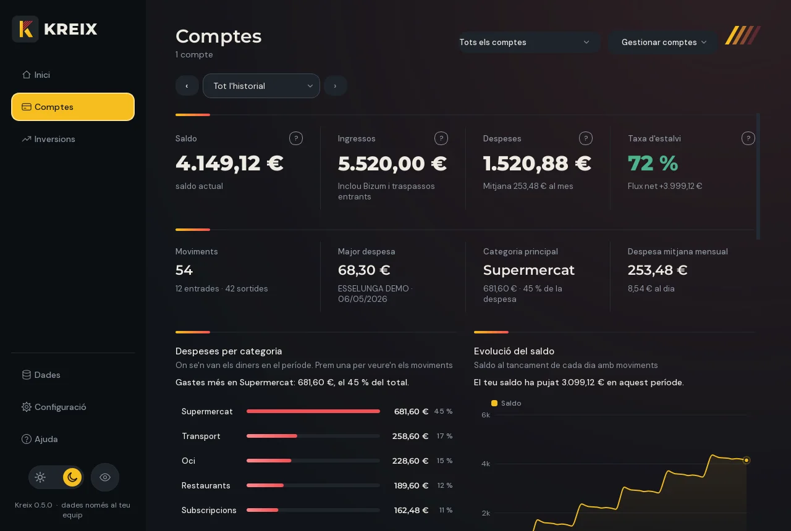
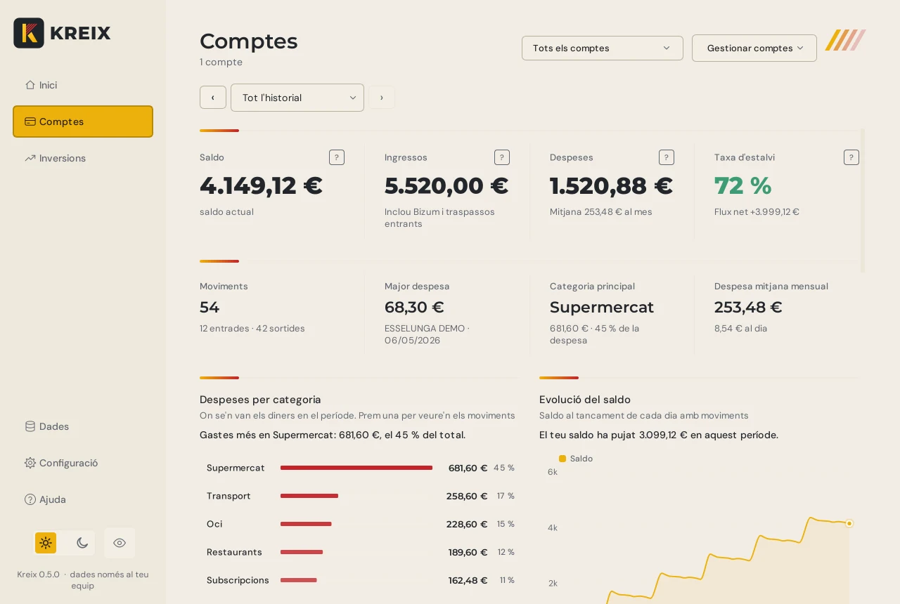
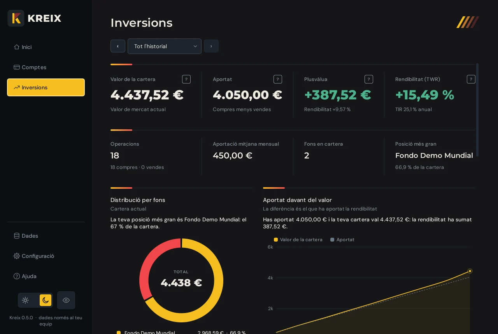
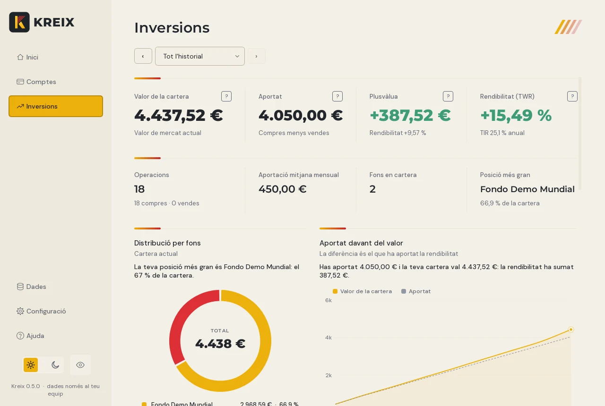
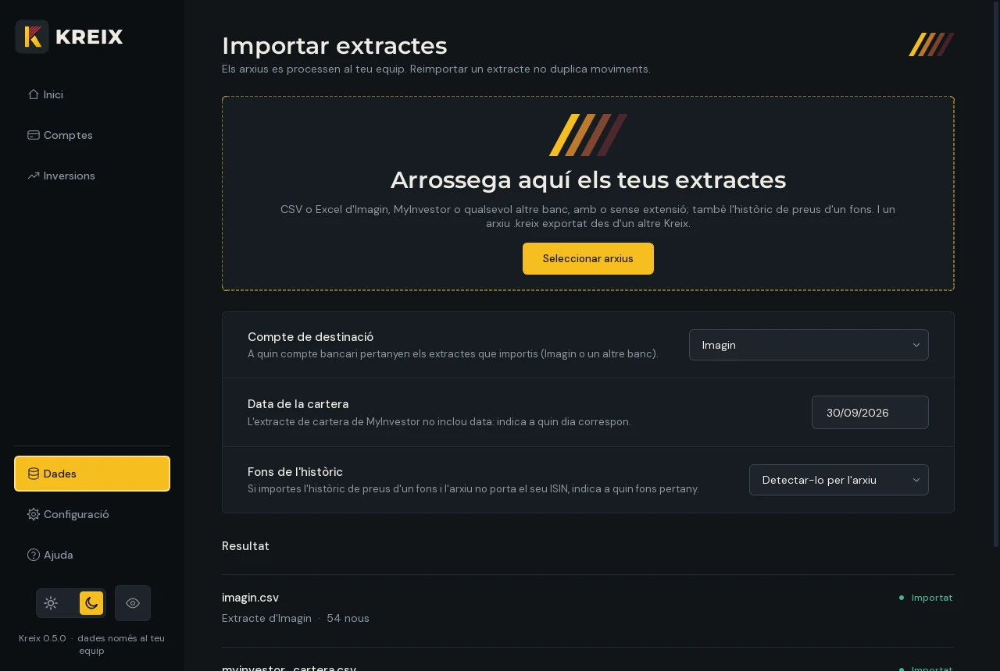
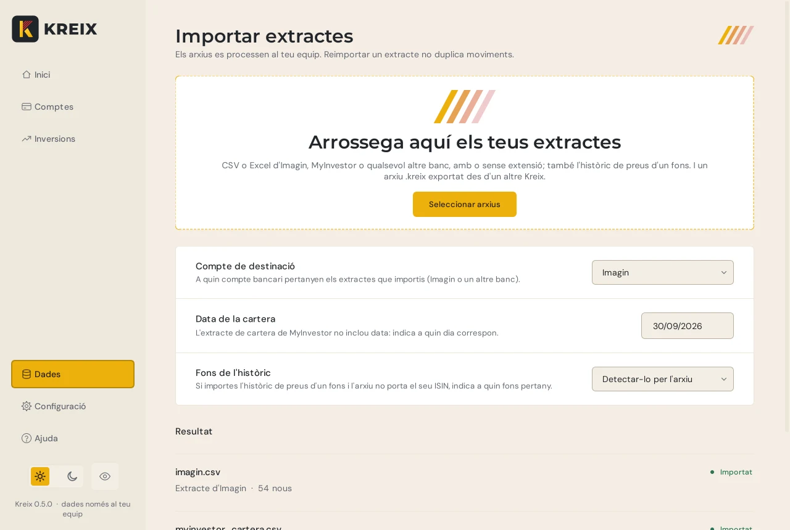
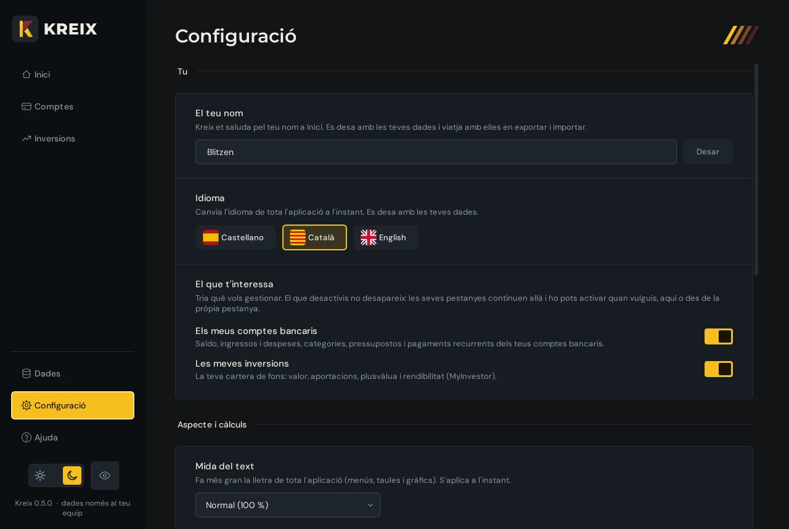
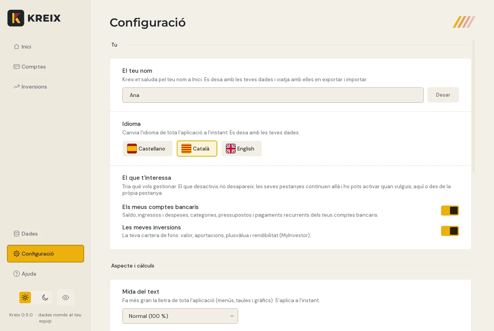

Kreix mai no et demana les claus del teu banc.
L'app de finances personals per a Windows i el mòbil que no et vigila: funciona sense connexió i ho guarda tot xifrat al teu equip.
Versió 0.6.1 per a Windows 10 i 11 (64 bits). Si Windows t'avisa en obrir-lo és perquè l'instal·lador encara no està signat: prem «Més informació» i després «Executa de totes maneres».
A l'ordinador, Kreix és un programa per a Windows: obre-hi aquesta pàgina per descarregar-lo. Descarrega-ho igualment (38 MB)
Tràiler: com funciona Kreix


- Així funciona Kreix, en un minut.
- Descarrega l'extracte del teu banc, en CSV o Excel.
- Deixa'l anar a Kreix. Veus el que ha llegit abans de guardar res.
- Inici ho resumeix: patrimoni, estalvi del mes i previsió a final de mes.
- Comptes i Inversions ho detallen: en què gastes i com va la teva cartera.
- Si algú mira per sobre l'espatlla, un clic difumina les quantitats.
- I al mòbil, la mateixa app: passa-li les teves dades amb un codi QR, sense cables ni connexió.
- Sense les claus del teu banc, sense connexió i amb tot xifrat.
- Kreix, per a Windows i per al mòbil.
El que Kreix no té
Quatre decisions de disseny, i cap no és negociable.
Claus del banc- Tu descarregues l'extracte i el deixes anar a Kreix. Kreix mai no entra a la teva banca ni guarda les teves claus.
Enviament de dades- Mai no envia les teves dades enlloc. El programa de Windows no es connecta a internet ni per actualitzar-se; l'app del mòbil, només per descarregar-se des d'aquest web.
Compte, núvol i telemetria- Sense compte, sense núvol i sense telemetria. Ningú sap quant guanyes ni en què ho gastes, ni tan sols nosaltres. Comprova-ho: funciona igual sense internet.
Dades sense xifrar- Tot el que guarda Kreix va xifrat amb la teva contrasenya mestra. Sense ella, ningú ho pot llegir, tampoc nosaltres. L'exportació també es pot xifrar.
Comença en tres passos
Sense enllaçar comptes i sense donar accés a ningú: només un arxiu que ja pots descarregar del teu banc.
-
Descarrega l'extracte
Des del web o l'app del teu banc, en CSV o Excel. És el mateix arxiu que baixaries per guardar-lo.
-
Deixa'l anar a Kreix
Arrossega'l a Importar. Kreix et mostra el que ha llegit i no guarda res fins que premis Importar. Si repeteixes un extracte, no duplica moviments.
-
Mira els teus diners
Inici resumeix el teu patrimoni, el teu estalvi del mes i el que ha de venir. Comptes i Inversions ho detallen.
Funciona amb el teu banc
Kreix llegeix CSV i Excel (.xlsx i l'antic .xls). Reconeix aquests formats per les seves columnes habituals.
| Banc | Estat |
|---|---|
| Imagin | A punt |
| MyInvestor | A punt |
| CaixaBank | En proves |
| Santander | En proves |
| Revolut | En proves |
| Trade Republic | En proves |
| Qualsevol altre | Et pregunta les columnes |
Si Kreix no reconeix un arxiu, et mostra les primeres files i et pregunta quina columna és la data, el concepte i l'import. Ho recorda per a la propera vegada. Els formats de CaixaBank, Santander, Revolut i Trade Republic estan inclosos, però encara en proves.
La guia, pantalla a pantalla
Cada pestanya de la barra lateral, en poques paraules. Les dades de les captures són inventades.
Tot l'important d'un cop d'ull
- El teu patrimoni net, la rendibilitat i la taxa d'estalvi del mes.
- Una previsió de quants diners tindràs a final de mes, amb els teus pagaments fixos.
- Pròxims pagaments, pressupostos i els moviments que encara no tenen categoria.
Les teves despeses, clares
- Despeses per categoria i evolució del saldo, d'un mes o de tot l'historial.
- Canvia la categoria d'un moviment amb clic dret, o crea les teves pròpies regles.
- Pressupostos per categoria i pagaments recurrents detectats.


La teva cartera de fons
- Valor de la cartera, l'aportat, la plusvàlua i la rendibilitat.
- Distribució per fons i evolució respecte al que has aportat.
- S'alimenta de les operacions i la cartera que exportes de MyInvestor.


Deixar anar i revisar
- Arrossega els CSV o Excel del teu banc a la zona d'importació.
- Veus què s'ha llegit abans de guardar, i gairebé tot es pot desfer.
- Si Kreix no reconeix l'arxiu, et pregunta quina columna és cada cosa i ho recorda.


A la teva manera
- Castellà, català o anglès, amb canvi a l'instant.
- Tema clar o fosc, mida del text i cel animat a Inici.
- Contrasenya, bloqueig automàtic i còpies de seguretat xifrades.


Un ull per a quan et miren per sobre l'espatlla
Amb un clic, o amb Ctrl+H, Kreix difumina totes les quantitats: en xifres, taules i gràfics. Es nota que hi ha un número, però no quin. Prova-ho.
Categories automàtiques
Kreix classifica les teves despeses tot sol, i les teves regles manen sobre les seves.
Pagaments recurrents
Detecta subscripcions i rebuts, i et diu quan toca el següent. Treus els que ja no pagues.
Gairebé tot es pot desfer
Cada canvi important mostra un avís amb el botó Desfer.
Kreix al mòbil
La mateixa app, adaptada al mòbil: les mateixes xifres, gràfics i explicacions, amb Blitzen i Black a Inici. S'instal·la des del navegador, sense botiga d'apps, i ho guarda tot xifrat al mòbil.
Els passos són els de Chrome. A Edge són gairebé iguals.
-
Obre Kreix a Chrome
Prem «Obre Kreix al mòbil», aquí sota, des del mateix mòbil. La primera vegada descarrega uns 20 MB; després funciona sense connexió.
-
Obre el menú
Toca els tres punts (⋮), a dalt a la dreta de Chrome.
-
Toca «Instal·la l'aplicació»
Si no la veus, toca «Afegeix a la pantalla d'inici» i després «Instal·la». Fan el mateix.
-
Confirma
Toca «Instal·la» al quadre que apareix. Triga un segon; sense botiga d'apps i sense compte.
-
Obre-la des de la pantalla d'inici
Busca la icona de Kreix entre les teves apps. S'obre a pantalla completa, com qualsevol altra.
Els passos són els de Samsung Internet, el navegador que porten els Samsung Galaxy.
-
Obre Kreix a Samsung Internet
Prem «Obre Kreix al mòbil», aquí sota, des del mateix mòbil. La primera vegada descarrega uns 20 MB; després funciona sense connexió.
-
Obre el menú
Toca les tres ratlles (≡), a baix a la dreta.
-
Toca «Afegeix la pàgina a» i després «Pantalla d'inici»
Si la teva versió mostra «Instal·la», fes-la servir: fa el mateix.
-
Confirma
Toca «Afegeix» al quadre que apareix. Triga un segon; sense botiga d'apps i sense compte.
-
Obre-la des de la pantalla d'inici
Busca la icona de Kreix entre les teves apps. S'obre a pantalla completa, com qualsevol altra.
Ha de ser Safari: és on «Afegir a la pantalla d'inici» hi és sempre.
-
Obre Kreix a Safari
Prem «Obre Kreix al mòbil», aquí sota. Si l'enllaç s'obre dins d'una altra app (WhatsApp, Instagram…), copia'l i enganxa'l a Safari. La primera vegada descarrega uns 20 MB.
-
Toca Compartir
El quadrat amb una fletxa cap amunt: a baix a l'iPhone, a dalt a la dreta a l'iPad.
-
Baixa i toca «Afegir a la pantalla d'inici»
La llista és llarga: fes-la lliscar cap amunt fins a veure l'opció amb un quadrat i un «+».
-
Posa-li nom i toca «Afegeix»
Deixa «Kreix» i toca «Afegeix», a dalt a la dreta.
-
Obre-la des de la pantalla d'inici
Obre-la des de la icona, no des de Safari: així es veu a pantalla completa.
Porta les teves dades
Importa els extractes des del mòbil o passa-li els de l'ordinador: a Kreix per a Windows, Dades, Exportar i «Passar al mòbil», i escaneja el codi QR amb l'app. Sense cables ni connexió.
Les teves dades es queden xifrades al mòbil amb la teva contrasenya mestra. L'app només es connecta a aquest web per descarregar-se i, quan hi ha una versió nova, per actualitzar-se. També funciona al navegador d'un Mac o d'un ordinador amb Linux.
Les teves dades no surten del teu ordinador
No cal refiar-se d'una promesa: Kreix està fet perquè no tingui res a enviar ni on enviar-ho.
-
Sense xarxa
Kreix no inclou funcions de connexió a internet: ni per actualitzar-se, ni per enviar dades, ni per mesurar com l'uses.
-
Xifratge de debò
Les dades es xifren amb AES i una clau que surt de la teva contrasenya (PBKDF2-SHA256 amb 600.000 iteracions). Si algú manipula l'arxiu, deixa d'obrir-se.
-
Res en clar al disc
En obrir Kreix, les teves dades es desxifren només a la memòria. No s'escriuen arxius temporals sense xifrar.
-
La contrasenya és només teva
Ningú més la té. Per això, si l'oblides, tampoc es pot recuperar res: hauries de començar de zero.
Comprova-ho tu
Per a més garanties, crea al Tallafoc de Windows una regla de sortida que bloquegi Kreix i comprova que continua funcionant.
I el codi és a la vista: llegeix-lo a GitHub.
-
Desconnecta el wifi o el cable de xarxa.
-
Obre Kreix i fes-lo servir amb normalitat: importa, mira els teus gràfics, canvia categories. Tot funciona igual, perquè mai no ha necessitat connexió.
Què convé saber
L'arxiu que crea Exportar (.kreix) es pot xifrar amb la teva contrasenya, però no és obligatori. Si no el xifres, guarda'l en un lloc segur. I apunta la teva contrasenya mestra en un lloc segur: si la perds, no hi ha manera de recuperar les teves dades.
100 % Offline
100 % Xifrat
100 % Privat
A l'ordinador, Kreix és un programa per a Windows: obre-hi aquesta pàgina per descarregar-lo. Descarrega-ho igualment (38 MB)
Preguntes freqüents
Necessita Kreix les meves claus o accés al meu banc?
No, mai. Kreix no es connecta al teu banc. Treballa amb els extractes que descarregues tu.
Es connecta a internet?
No. Funciona exactament igual sense connexió, i no inclou res per enviar informació fora del teu ordinador.
On es guarden les meves dades?
En un arxiu xifrat dins de la teva carpeta de dades d'aplicació (a Windows, %APPDATA%\Kreix). Només es desxifren a la memòria mentre Kreix està obert.
Què passa si oblido la contrasenya?
No es pot recuperar: no hi ha cap clau de recanvi, i per això ningú més pot llegir les teves dades. Podràs començar de zero amb una contrasenya nova. Guarda còpies de seguretat i apunta la contrasenya en un lloc segur.
Què passa si importo dues vegades el mateix extracte?
Res: Kreix reconeix els moviments que ja té i no els duplica.
Puc endur-me les meves dades a un altre ordinador?
Sí. Exportar crea un arxiu .kreix que deixes anar a Importar a l'altre equip. El pots xifrar amb la teva contrasenya. Importar-lo substitueix les dades que hi hagués.
Puc desfer un canvi?
Gairebé tots els canvis importants mostren un avís amb el botó Desfer: importar, canviar categories, crear regles, pressupostos i esborrats.
En quins idiomes està?
Castellà, català i anglès. S'escull la primera vegada que l'obres i es canvia quan vulguis a Configuració.
Funciona en Mac o al mòbil?
Al mòbil, sí: Android i iPhone tenen l'app de Kreix, que s'instal·la des del navegador (mira «Kreix al mòbil»). En un Mac o a Linux pots fer servir aquesta mateixa app des del navegador. El programa amb instal·lador és només per a Windows.
Com l'instal·lo?
Descarrega l'instal·lador i obre'l. No demana permisos d'administrador i crea una drecera a Inici i a l'escriptori. Com que l'instal·lador encara no està signat, Windows pot avisar-te la primera vegada: prem «Més informació» i «Executa de totes maneres».